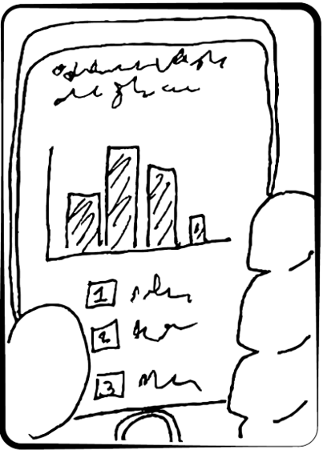

What is it?
This is a tool to help DC Government interact with residents. It starts with surveys, gathering opinions from residency, and then takes the results and helps DC Government agencies use the data to make decisions. All the while keeping residents informed about how their feedback has influenced projects, and the results of the work.

We find people at their doorsteps, mailboxes, communities, phones, computers - Where they are!

Empowered with relevant information, people provide feedback and give their opinions.

Results are transparently presented and discussed, in turn informing decision making.

The process of collecting and using resident feedback becomes a regular practice for DC government.